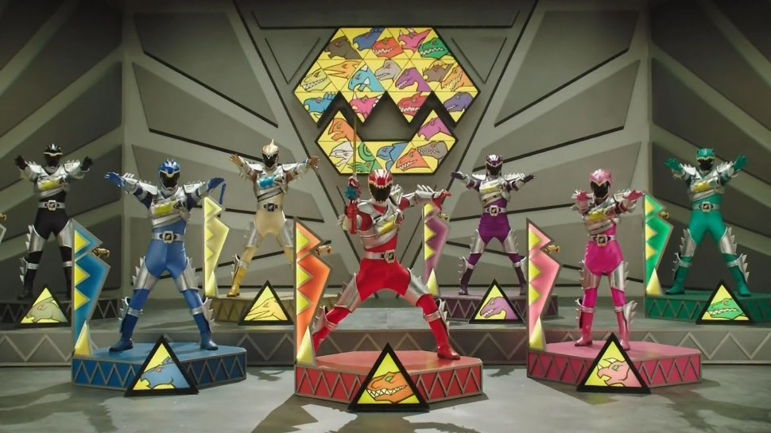

``
Yadla Swarnalatha Productions LTD
Zara:
Why, Arthur, what does it matter? When the higher
qualities of the heart are all that can be desired, the higher
notes of the voice are matters of comparative insignificance. Who
thinks slightingly of the cocoanut because it is husky? Be-sides
(demurely), you are not singing for an engagement (putting her
hand in his), you have that already!
Fitz.:
How good and wise you are! How unerringly your
practiced brain winnows the wheat from the chaff—the
material from the merely incidental!
Zara:
My Girton training, Arthur. At Girton all is wheat, and
idle chaff is never heard within its walls! But tell me, is not
all working marvelously well? Have not our Flowers of Progress
more than justified their name?
Fitz.:
We have indeed done our best. Captain Corcoran and I
have, in concert, thoroughly remodeled the sister-
services—and upon so sound a basis that the South Pacific
trembles at the name of Utopia!
Zara:
How clever of you!
Fitz.:
Clever? Not a bit. It's easy as possible when the
Admiral-ty and Horse Guards are not there to interfere. And so
with the others. Freed from the trammels imposed upon them by
idle Acts of Parliament, all have given their natural tal-ents
full play and introduced reforms which, even in Eng-land, were
never dreamt of!
Zara:
But perhaps the most beneficent changes of all has been
ef-fected by Mr. Goldbury, who, discarding the exploded theory
that some strange magic lies hidden in the number Seven, has
applied the Limited Liability principle to individuals, and every
man, woman, and child is now a Company Limited with liability
restricted to the amount of his declared Capital! There is not a
christened baby in Utopia who has not already issued his little
Prospectus!
Fitz.:
Marvelous is the power of a Civilization which can
trans-mute, by a word, a Limited Income into an Income Limited.
Zara:
Reform has not stopped here—it has been applied
even to the costume of our people. Discarding their own barbaric
dress, the natives of our land have unanimously adopted the taste-
ful fashions of England in all their rich entirety. Scaphio and
Phantis have undertaken a contract to supply the whole of Utopia
with clothing designed upon the most approved English
models—and the first Drawing-Room under the new state of
things is to be held here this evening.
Fitz.:
But Drawing-Rooms are always held in the afternoon.
Zara:
Ah, we've improved upon that. We all look so much
better by candlelight! And when I tell you, dearest, that my
Court train has just arrived, you will understand that I am long-
ing to go and try it on.
Fitz.:
Then we must part?
Zara:
Necessarily, for a time.
Fitz.:
Just as I wanted to tell you, with all the passionate
enthu-siasm of my nature, how deeply, how devotedly I love you!
Zara:
Hush! Are these the accents of a heart that really
feels? True love does not indulge in declamation—its voice
is sweet, and soft, and low. The west wind whispers when he woos
the poplars!
DUET — Zara and Fitzbattleaxe.
Zara:
Words of love too loudly spoken
Ring their own untimely knell;
Noisy vows are rudely broken,
Soft the song of Philomel.
Whisper sweetly, whisper slowly,
Hour by hour and day by day;
Sweet and low as accents holy
Are the notes of lover's lay.
Both:
Sweet and low, etc.
Fitz.:
Let the conqueror, flushed with glory,
Bid his noisy clarions bray;
Lovers tell their artless story
In a whispered virelay.
False is he whose vows alluring
Make the listening echoes ring;
Sweet and low when all-enduring
Are the songs that lovers sing!
Both:
Sweet and low, etc.
SONG — Fitzbattleaxe.
A tenor, all singers above
(This doesn't admit of a question),
Should keep himself quiet,
Attend to his diet
And carefully nurse his digestion;
But when he is madly in love
It's certain to tell on his singing—
You can't do the proper chromatics
With proper emphatics
When anguish your bosom is wringing!
When distracted with worries in plenty,
And his pulse is a hundred and twenty,
And his fluttering bosom the slave of mistrust is,
A tenor can't do himself justice,
Now observe—
(sings a high note),
You see, I can't do myself justice!
I could sing if my fervour were mock,
It's easy enough if you're acting—
But when one's emotion
Is born of devotion
You mustn't be over-exacting.
One ought to be firm as a rock
To venture a shake in vibrato,
When fervour's expected
Keep cool and collected
Or never attempt agitato.
But, of course, when his tongue is of leather,
And his lips appear pasted together,
And his sensitive palate as dry as a crust is,
A tenor can't do himself justice.
Now observe—
(sings a high note),
It's no use—I can't do myself justice!
| Characters |
Singers |
Money Offered |
| Zara |
Gold |
5 million |
| Fitz |
Kalyba |
10 million |
| Phan |
Nekaya |
15 million |
link to opera2 file
